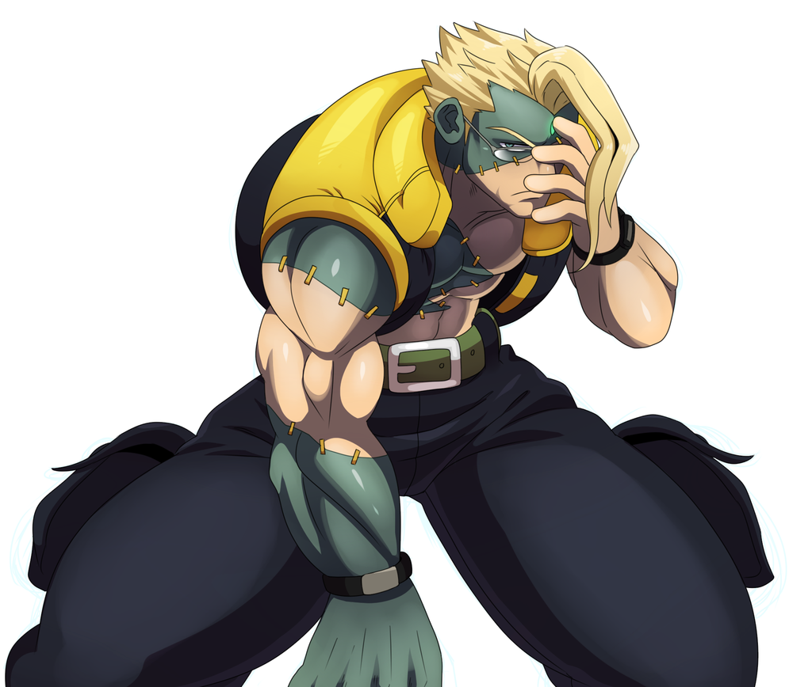

Charlie was introduced as the one who originally taught Guile his current fighting style. Because of this, Charlie is a "clone" who uses the same fighting style, complete with most of the same normal and special attacks, but with some few differences.
The main difference is that Charlie's fighting style is 'perfected', while Guile's is less proficient because of his short temper and lack of focus. This is shown in his ability to throw a Sonic Boom with one hand (and sometimes even his feet), as well as his two-hit Flash Kick that uses both legs. In addition, Charlie also possesses the Knee Bazooka, one of the only few dash attacks in Street Fighter Alpha 3. In general, Charlie possess a drastically retooled and more violent fighting style; this includes a new tackle maneuver, Tragedy Assault, in which Charlie violently shoves his opponent's head to the ground and infuses Ki energy into them, and the Judgement Sabre in which Charlie forces a vertical Sonic Hurricane into the opponent's head.
Charlie's fierce sense of justice was ever present even at a young age. According to supplementary materials, Charlie Nash's past saw him as a young U.S Marine enrolled university student with a major in biology and an interest in martial arts. His career eventually saw him climb the ranks, and become skilled enough to win the Pan American Martial Arts Tournament. Soon to be a member of a "secret elite military team", Charlie co-piloted a special mission into Thailand along with his long-time friend, Guile. Their mission backfired and they were both captured. After their escape, Charlie was convinced that the enemy had inside information from someone within the U.S. military, and became determined to get to the bottom of it, seeking whoever had been behind the incident in Thailand. As suggested by the fighter planes seen in the background of his stages, he has some kind of flight training, but rather was in the United States Marine Corps Infantry. Also, the Marine Corps has its own fighting style called MCMAP.